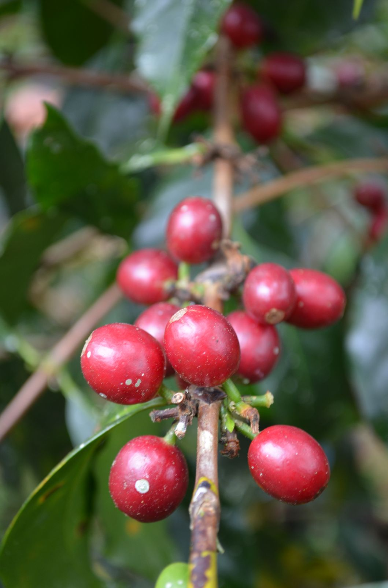
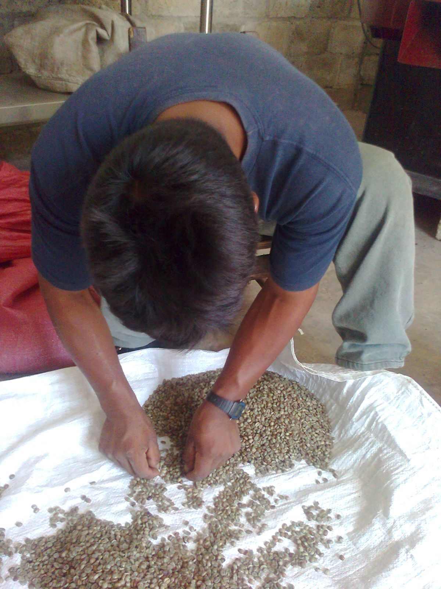
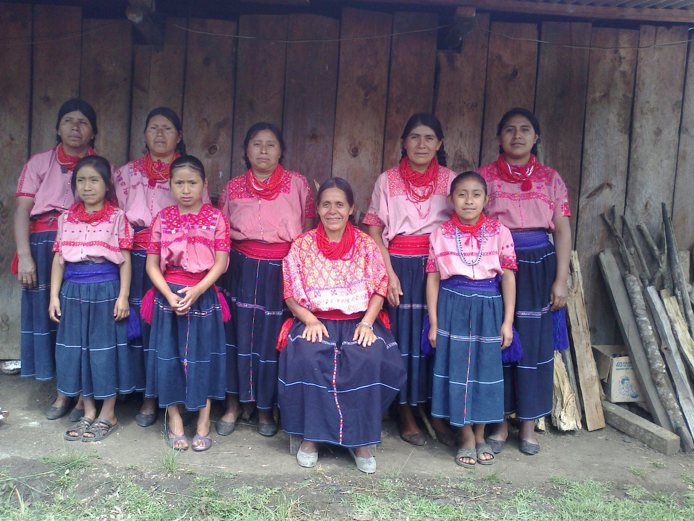
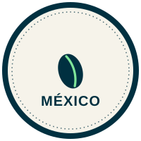

Pedidos al instante, sin formularios.
999 318 3525
Café orgánico de especialidad · Sureste de México
De la mata
De la mata
a tu taza.
Cultivado a la sombra de la selva por pequeños productores de Chiapas, Veracruz y Oaxaca. Tostado en lotes pequeños en Mérida.
Pedir por WhatsApp
Desde $51 la bolsa de 100 g
100% orgánico
Cultivado a la sombra, sin químicos.
Tostado bajo pedido
Fresco en lotes pequeños en Mérida.
Envío a todo México
Pedido y seguimiento por WhatsApp.
La colección · Cinco guardianes de la selva
Elige tu animal.
Cada línea es un habitante de la selva y un carácter de taza. Elige tamaño y molienda; el precio se ajusta y armas tu pedido por WhatsApp.
Frescura y envíos
Fresco por diseño
Tostado bajo pedido. Fresco por diseño.
Del tostador a tu taza, sin bodega ni anaquel: tostamos bajo pedido y sellamos con válvula.
Tostado bajo pedido
Encendemos el tostador cuando llega tu pedido, no antes.
Sellado con válvula
Deja salir el gas del tueste y no deja entrar el aire.
Lotes pequeños
Poco y bien: nada de tandas industriales ni café dormido.
Envíos
Envíos a todo México
Enviamos a toda la República por paquetería. El costo depende de tu región y te lo confirmamos por WhatsApp antes de que pagues.
- Envío gratis en pedidos de 5 kg o más.
- Entrega en aproximadamente 4 días hábiles.
- Rastreo en tiempo real: sigue tu paquete paso a paso, como una compra en línea. Te enviamos tu número de guía por WhatsApp en cuanto sale.
Precios 2026 · Público general · MXN · el «desde $51» es la bolsa de 100 g · Pedidos y envíos por WhatsApp.
El oficio
De la mata a tu taza.
Seis pasos, sin prisa. Del cafetal de sombra al tueste artesanal en Mérida.

- 01FloraciónNace el fruto entre flores blancas.
- 02RecolecciónCosecha selectiva del cerezo maduro.
- 03SelecciónSe elige el mejor grano, uno por uno.
- 04DespulpadoSe separa la pulpa y se lava el grano.
- 05SecadoEl grano descansa en sacos de yute.
- 06TuesteTostado en lotes pequeños, listo para ti.

Quiénes somos
Un café con nombre de selva
El momoto es el ave que solo habita donde la selva está sana. Como ella, cultivamos a la sombra y sin agroquímicos: un café que deja el bosque en pie.
Trabajamos con grano orgánico de altura de Chiapas, Veracruz y Oaxaca, y desde Mérida lo seleccionamos, tostamos y empacamos lote a lote para llevarte una taza limpia, honesta y de especialidad.
- 100% orgánico, libre de agroquímicos.
- Cultivado a la sombra en el sureste de México (Chiapas, Veracruz y Oaxaca).
- Tostado y empacado en Mérida.

Hecho en MéxicoRespaldo y reconocimientos
Certificaciones
USDA Organic
SADER Orgánico
Certimex
Comercio justo — trato directo
Miembro de AMECAFE
Reconocimientos
- Global Quality Award Gold Elite — Global Quality Foundation.
- Reconocida entre las mejores marcas de café mexicano.
Nos encuentras en
Palacio de Hierro
City Market
The Green Corner
Tostado bajo pedido, en lotes pequeños.
Empaque con válvula para café siempre fresco.
Voz del cliente
Lo que dicen quienes ya lo prueban
Pide tu café
A un mensaje de distancia
La forma más rápida es WhatsApp. También te esperamos en Mérida.
Mayoreo
Cafeterías, oficinas y tiendas. Atención directa a clientes.
Contacto: Lourdes Solís Letayf
Tel. 55 5104 0857
Cotizar mayoreo